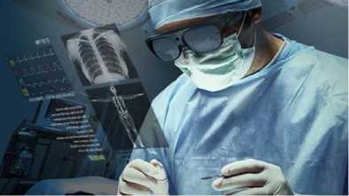

Assignment
Bij dit onderwerp is vanuit de Haagse Hogeschool de opdracht gegeven om een AR- of VR- concept te bedenken voor drie toepassingsgebieden. Daarbij is gevraagd om voor elk concept specifiek te beschrijven wat ermee bereikt moet worden en hoe het werkt, ondersteund met een illustratie/afbeelding. De toepassingsgebieden waar we uit konden kiezen waren: 1. educatie en/of onderzoek, 2. (angst) therapie, 3. gezondheidszorg, 4. kunst en/of museums, 5. auto’s/auto technologie/weg constructies en/of infrastructuur, 6. openbaar vervoer en als laatste 7. sport/beweging.
De toepassingsgebieden die ik heb gekozen zijn: (angst)therapie, gezondheidszorg en kunst/museums.
1. Voor (angst)therapie kan Virtual Reality naar mijn mening echt een uitkomst zijn. Mensen die heel bang zijn voor iets specifieks kunnen door middel van VR in een hele andere wereld terecht komen waarin hun gedachte kunnen verzetten en gerustgesteld kunnen worden. Je ziet tegenwoordig vaak dat er spellen bedacht worden waarin virtual reality op een negatieve manier gebruikt wordt, door je in een wereld te brengen waar je schrikt van de dingen die langs je komen of dat je bijvoorbeeld op het randje van een hoog gebouw staat. Echter, ik denk dat je virtual reality ook juist op de tegenovergestelde manier kan gebruiken. Door bijvoorbeeld voor mensen met een angst therapie voor inbrekers of mensen die achter je aankomen een wereld te maken waarin de persoon een huisdier heeft, je mooi weer buiten ziet en het altijd daglicht is. Zo worden de “enge” elementen weggehaald en kunnen ze bij een angstaanval een VR-bril erbij pakken en even naar een hele andere wereld gaan.

2. Voor gezondheidszorg denk ik dat het heel veel uitkomsten kan bieden. Als concept zie ik dit me nu vooral voor me in de vorm van operaties. Hoe handig zou het zijn als chirurgen tijdens de operaties in de vorm van AR/VR boven het lichaam projecties zouden zien van de organen of van instructies. Zo kunnen ze veel specifieker en nauwkeuriger een operatie uitvoeren en worden het maken van fouten verminderd. Ze kunnen van tevoren opzoeken en aangeven wat voor soort operatie ze gaan uitvoeren en welke informatie daarbij noodzakelijk is. Daarnaast kunnen ze door van tevoren een scan van het lichaam gemaakt te hebben tijdens te operatie hier onderdelen van projecteren.

3. Voor kunst/museums denk ik dat je heel veel kanten op kan gaan met AR en VR. Door middel van een VR-bril zou je vanuit huis kunstwerken kunnen bekijken en echt door een museum kunnen lopen. Door een kunstwerk "aan te raken" kan je meer informatie verkrijgen en ook in aanraking komen met de kunstenaar van het kunstwerk. Er komt dan namelijk een beeld naar voren van de kunstenaar, net alsof hij of zij daar echt staat, en die verteld meer over het kunstwerk en zijn of haar werkwijze. Dit zou je in een normaal/echt museum vrijwel nooit meemaken, maar door middel van deze technologieën kan het werkelijkheid worden! Je kunt dit dus vanuit huis gebruiken, maar het kan ook in een museum verwerkt worden, door op een plek brillen neer te leggen waarmee bezoekers deze extra beelden kunnen bekijken.
Research
Ik heb onderzoek gedaan naar leuke, interessante en indrukwekkende projecten over AR en VR. Bij dit onderzoek heb ik geprobeerd achtergrondinformatie over het project te vinden. Het project wat ik heb gevonden is "Selling Real Estate in Virtual Reality".
Het idee van het concept is dat je huizen kunt verkopen door middel van een virtual reality ervaring van nieuwe appartementen en in dit geval in Sydney in Australië. Er worden tegenwoordig vaak al panoramische foto's of 360 graden video's gebruikt om de interesse van een potentiële koper te vergroten, maar als het gaat om het verkopen van onroerend goed voordat het zelfs maar is gebouwd is dit niet genoeg. Hiervoor wil je dat de koper echt voelt alsof hij of zij zich midden in het gebouw bevindt. Hiervoor is virtual reality dus de uitkomst!
Virtual reality heeft de potentie om een zeer krachtig hulpmiddel te worden als het gaat om de verkoop van vastgoedprojecten en een Australische ontwikkelstudio van VR profiteerd daarvan. De in Sydney gevestigde virtual reality studio Start VR biedt een volledig meeslepende VR-ervaring voor potentiële kopers om de ruimte van een appartementsontwikkeling te ervaren voordat de bouw dus zelfs is begonnen.
Start VR heeft hiervoor de EDGE 28-app ontwikkeld voor de verkooplancering van de appartementsontwikkeling, een fotorealistische ervaring beschikbaar om te downloaden en te bekijken met een Samsung Gear VR-headset of Google Cardboard-viewer. De app bevat door de computer gegenereerde weergaven van bouwkundige tekeningen van de ontwikkeling en combineert dit met live-actie 360-drone-beeldmateriaal.
De app is niet alleen beschikbaar om te ervaren vanuit het comfort van uw huidige huis, voor mensen zonder een headset neemt start VR de virtuele eigendomstour mee op weg en nodigt huizenkopers uit om een showroom te bezoeken en het uit te proberen op een Gear VR-headset.
"“We wanted to create an experience that allows people to feel like they are in a finished apartment, feel the true dimensions and space and also enjoy the actual views they would see,” Start VR CEO Kain Tietzel commented."
Consumenten meer vertrouwen geven bij het doen van een grote aankoop, zoals het kopen van een huis of een appartement, vooral wanneer ze zich net buiten de architecturale plannen bevinden, is een gewaardeerde stimulans voor wat normaal een stressvol proces kan zijn. En met virtual reality, wat in staat is om emotionele ervaringen met een omgeving te creëren, kan dit precies zijn wat ontwikkelaars zochten om gebouwen te vullen.
Bron: https://vrscout.com/projects/selling-real-estate-in-virtual-reality/.
Unreal Engine Assignment
Tijdens een van de workshops heb ik kennis gemaakt met Unreal Engine. Hierbij heb ik verschillende experimenten gedaan die onder workshops → VR Enviroments worden getoond. Unreal Engine is een ontwikkelomgeving waarin je virtuele werelden kunt creëren. Het is momenteel de beste game-engine en is gebruikt om veel AAA-spellen en -simulaties te maken. Ik heb in Unreal Engine onder andere voorwerpen laten draaien en een spel gemaakt waarbij je een pion kon bewegen met toetsen en daarmee weer andere elementen kon weghalen. Je zou dit nog op heel veel interactieve manieren kunnen uitbreiden. Zo zou je dingen kunnen laten "vliegen" over je scherm of heen en weer laten bewegen en dat je die elementen dan weer met je pion zien te pakken moet krijgen. De gebruiker ervaart in deze virtuele wereld dus vooral dingen die in het echt niet zo snel gebeuren of mogelijk zijn. Het is echt een speelomgeving waarin de gebruiker al zijn creativiteit kwijt kan, interactief bezig kan zijn en zich in een totaal andere omgeving bevindt dan de echte wereld.
Reflect
Ik vind dit een heel leuk onderwerp met veel verschillende, interessante aspecten. Je kan AR en VR op zoveel verschillende manieren inzetten en ik denk dat we het in de toekomst alleen maar meer gaan zien. Vooral de zorg kant tekt mij weer aan, omdat ik denk dat dit echt nieuwe mogelijkheden zal bieden. Niet alleen voor operaties met AR/VR beelden, maar ook voor patiënten die landurig in een ziekenhuis moeten liggen en met Virtual Reality even helemaal naar een andere wereld kunnen gaan waar ze niet continu met bijvoorbeeld hun ziekte geconfronteerd worden. Naast deze zorg kant, kan je met AR/VR dus nog veel meer kanten op. Naar mijn mening is dit onderwerp en deze technologie ook al best wel ver ontwikkeld en gaat het nu vooral om het bedenken van concepten en het uitwerken in steeds meer mogelijkheden. Daarnaast ben ik van mening dat dit voor elke leeftijd interessant kan zijn! Dit onderwerp deed tot slot zeker aan mijn verwachtingen. Ik heb heel veel geleerd en ben door de colleges en opdrachten nog enthousiaster hierover geworden.